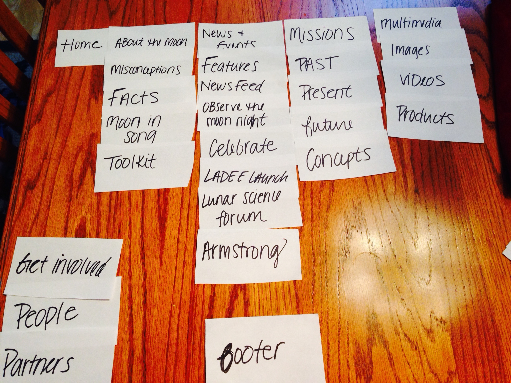

| This is my altered Nasa website. My first task was to move the navigation from vertical to horizontal. I feel as though it gives the site more structure. Within this navigation are what I deem the most links. The secondary links, such as "Get Involved", "People" and "Partners" are in still in a vertical navigation on the left. I also decided that the "Calendar", "News" and "Twitter" sections should be in their own navigation because they are all widgets. Overall the other participants agreed with my setup; Below I describe where the differences came from. |
|  | Immediately after viewing the current Nasa website, I decided I did not like the left navigation bar. I decided it would be more fitting for the site to be at the top of the page, consisting of the most important pages. At first I thought "Get Involved" should have been in the main navigation, but after having my setup critiqued, it was made clear that "Multimedia" was a better fit. |